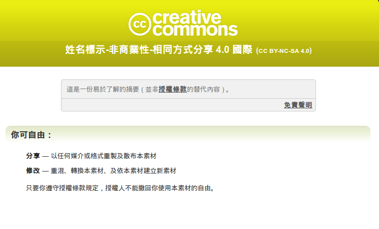

2016-06-05

台灣創用CC 計畫協助進行的創用CC 授權條款 4.0 繁體中文翻譯，即日起至 2016 年 7 月 31 日止，進入了為期約一個月的公眾評論期 (public comments period)。此一模組化式的創用CC 授權條款 4.0 版，是因應 Open Data 及跨國協作專案所升級改版的法律工具，其適用對象包括具資料庫權利保護地位的素材 (material)，可以協助創作、素材的提供者，選擇他們偏好的授權組合，再依其規劃，讓這些作品與素材，可以採授權文字全球均一化的方式釋出，裨利於跨域與跨界合作共工，以產生更完整、更具影響力的公眾參與式創作！
Creative Commons 組織於 2013 年 11 月 25 日，便已推出現行 4.0 版的授權條款，然而因為此一版本與全球各地合作網絡的互動模式改變，故整體更新的進度較為慎重而緩慢，但目前也已取得頗多進展，主要是，創用CC 4.0 版授權條款最大的改變特點有三：第一、走的是國際化路線，僅有推出時的英文版本為具有正式法律準據力的授權文本，故其條款原則上不再進行「本地化 (porting)」的法規調適，而是建議一個語言一個翻譯版本；第二、納入資料庫權利保護 (sui generis database rights)，明定其為創用CC 新版條款的授權所及客體，以讓創用CC 授權條款，正式前進到開放資料 (Open Data) 的應用環境下；第三、參酌若干常見自由開源軟體授權條款的設計，以為創用CC 授權條款日後再改版，或在實際運用環境下，能與自由開源軟體授權條款結合運用，例如 4.0 新增的 30 天即時更正自動復權條款、編撰時以白話淺顯的方式來行文，還有於 2015 年 10 月初確定，CC BY-SA 4.0 授權素材能單向轉換為 GPL-3.0 授權被使用在軟體專案裡，在在都是在與自由開源軟體授權條款進行的相容性規劃。
由於此次 CC-4.0 的繁體中文翻譯，並不設限以臺灣一地的創作人與使用者為預設採用族群，而是著眼讓全球各地的繁體中文使用者，有相關需求時都可以自主採用，故如香港、北美，或其他有機會使用繁體中文文本來釋出或使用作品的朋友，亦非常歡迎能夠提出您對翻譯的反饋與修正意見出來。以下為您簡介此段時間進行 CC-4.0 繁體中文翻譯的重要要點或爭點，相關項目將會在未來近一個月的討論期間進行最後的決斷，亦非常歡迎您能就這些項目要點，提供您真灼的評論意見：
- Creative Commons public licenses 是否仍然中譯為 3.0 本地化版本時使用之「創用CC 授權條款」？維持原創用CC 授權條款之譯文，在傳達上最不易造成誤會，然此一翻譯方式，並不受香港及北美一地的潛在使用者所熟悉。目前暫訂為求譯文上的連續性與一致性，且原「創用CC 授權條款」用詞已具一定之識別性，將建議保留之並以英文加註。
- CC 授權作品、改用作品等詞彙是否配合 CC-4.0 通俗化之用字，改稱之為 CC 授權素材、改用素材？此一作法尊重新版條款以素材 (material) 一字統合作品 (work) 與資料庫權利 (Sui Generis Database Rights) 之設計；然「素材」固為尊重 CC-4.0 新版條款之新創字，於國內外著作權法尚屬較不常見之表達方式。
- 權利之例外與限制條款裡，是否將英制之 Fair Dealing 及其他多數國家慣用之 Fair Use 統稱合理使用？因此兩者在細部上固有不同內涵，然多數國家之著作權法析之並無過大差異，或是分譯讓「合理使用、合理處置」並列，也是一個可資考量的作法。
本文附件為創用CC「姓名標示─非商業性─相同方式分享」4.0 國際 公眾授權條款之法律條款 (Legal Code) 的中英對照全文草稿，您可協助閱覽之後，透過右列開放文化基金會 (Open Culture Foundation, OCF) 與台灣創用CC 計畫一同協作的「CC社群授權討論室：https://groups.google.com/forum/#!forum/cctw-discussion」，直接公開發布您的寶貴評論與看法！或者，您希望以英文為主進行評論的編寫時，可透過電子郵件的方式，於信件標題上標註[cc-4.0-tc-draft]作為識別之後，將您的英文評論寄到 cc-licenses AT lists.ibiblio.org 給全球 CC 授權的討論群組，亦可。
下載 CC BY-NC-SA 4.0 法律條款繁中草稿純文字檔、下載 CC BY-NC-SA 4.0 法律條款繁中草稿 odt 檔、下載 CC BY-NC-SA 4.0 法律條款繁中草稿 pdf 檔。
參考資料：
http://creativecommons.tw/blog/20131127
https://www.fsf.org/blogs/licensing/creative-commons-by-sa-4-0-declared-one-way-compatible-with-gnu-gpl-version-3
https://creativecommons.org/faq/#should-i-choose-an-international-license-or-a-ported-license